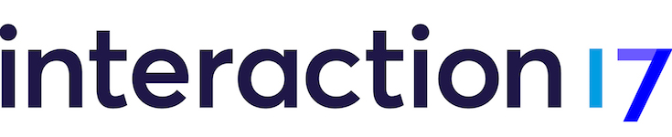

The IoT Service Kit is a board game that brings domain experts out of their silos to co-create user-centric IoT experiences.
Clashes and miscommunication between differing perspectives and disciplines can disrupt the workflow. The playful nature of the Kit brings down walls and naturally incites communication.
The world of IoT is abstract and difficult to talk about. Simply rearranging tokens on the IoT Service Kit map enables teams to make concepts tangible by physically demonstrating those ideas.
You don’t need be fully immersed in the tech world in order to use the Kit. The IoT Service Kit presents a comprehensive set of current technology that enables everyone to design for IoT.
The maps provide a general environmental context. Create your own to fit your project’s needs.
The 3D printed tokens are physical representations of users, vehicles, and assets that move in space.
There are five types of cards: Sensors, Interactions, Service Cards, Open APIs, and User Cards.
IoT is all about the context. Builduing a smart home is completely different from developing a conference venue.
IoT Sevice Kit comes with a set of popular pre-designed maps. Choose the one which fits your needs the best or create your own map.
IoT Services typically involve many different actors and participants. Tokens allow you to design detailed user journeys through your physical space.
With cards and tokens you can design each and every interaction that happens as part of your service. Move tokens along the map and have them interact with the stationary cards.
What types of devices and technologies your service needs to exist
A visualization of all the steps and touchpoints that make up your service, from the user’s perspective
What kinds of data you will need or collect at each step
“Innovative Tool or Technique”
“Methodology”

Recently presented at
This Kit is an open source tool for you to use and develop further with the community.
Check it out on GithubThe Kit is licensed under Creative Commons CC-BY.

Futurice sponsors open source through the Spice Program.
This project is brought to you by Futurice, a digital agency focused on Service Design, Consultancy and Software Craftsmanship.